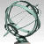

Lecture on Schrödinger operators: Harmonic analysis and PDE (in preparation).
Topics in Geometric analysis and Mathematical Physics
Return to top of page
Selected Publications
- Spectral multipliers for Schrödinger operators. Illinois
Journal of Mathematics 54, No.2.
- Littlewood-Paley theorem for Schrödinger operators. Anal. Theo. Appl. 22(4), 2006. Archiv
- (with J.J. Benedetto) Besov spaces for the Schrödinger operator with barrier potential. Complex Analysis and Operator Theory (2010). Archiv
- (with G.Olafsson)
Function spaces associated with
Schrödinger operators: the Pöschl-Teller
potential.
Journal of Fourier Analysis and Applicaitons 12 (6), 2006. Archiv - A representation formula related to Schroedinger operators. Anal. Theo. Appl., 20(3), (2004) also in Archiv
- Perturbed Fourier transform associated to Schrodinger operators. (to be submitted).
- Dissertation, Besov spaces for Schrödinger operators. University of Maryland, College Park, (2003).
- Cesaro summability of Hardy space on the ring of integers in a local field. J. Math. Anal. Appl., 249, (2000).
- Riesz type kernels over the ring of integers of a local field. J. Math. Anal. Appl., 208, (1997).
- (with Weiyi Su), L^p estimates for the iterated Hardy-Littlewood maximal operator. Approx. Theory Appl., 14 (3), (1998).
- L^p estimates for the iterated Hardy-Littlewood maximal operator, II
- (with Weixing Zheng), Almost
everywhere
convergence of
sequences of multiplier operators on local fields.
Science in China, 40 (1), (1997).
Springer-Verlag.
Return to top of page
Preprints

- Dispersive estimates for Schrödinger and wave equations with potentials near Ln/2(Rn) (In preparation) 2006.
- (with G. Olafsson and K. Oskolkov) Spectral multipliers for Schrödinger operators, II (In preparation).
- (with G. Olafsson) Wavelets, Besov spaces and integral representations
- (with Z. Zhang) Strichartz estimates for Schrodinger equation with magnetic potential of polynomial growth, (in preparation)
- (with D.M. Healy and I. Konstantinidis) Wavelet transform for anisotropic diffusion modeling in image processing, I
- Facet Modeling of 2D Equilibrium Crystals
- Multipliers of Hardy spaces on local fields
- Weak type estimates of Bochner-Riesz means on Riemannian symmetric spaces
Return to top of page
Technical Reports
- (with J.J. Benedetto, D.M. Healy and I. Konstantinidis) Report on recent progress on the TAIP project (Thin Film Analog Image Processing), 2003 (DARPA (Defense Advanced Research Projects Agency) funded project)
- (with Harris Wong) Facet modeling for 2D equilibrium crystal solid film, 2004 (CCT (Center for Computaton and Technology) funded project)
Return to top of page
Education
M.A., University of New Mexico, 1997
Return to top of page
Invited Talks
- Besov spaces associated with Schroedinger operators,
University of
California at Los Angeles, Los Angeles, March, 2002.
- Schroedinger operators, Besov spaces and Wavelet
computations for thin film image processing, Colloquium talk,
University of Houston, Houston, November, 2002.
- Wavelet computing for semigroup operators, NSF FRG
workshop on Wavelets, Frames, and Operator
Theory, University of Maryland, College Park, January, 2003.
- Operator reconstruction in wavelet basis and its
applications in PDEs,
The Sixth International Joint Meeting of the AMS and the SMM, Houston,
May, 2004.
- Operator representations in wavelet basis and
applications in PDEs,
The Second International Conference on Computational Harmonic Analysis,
Nashville, May 24-30, 2004.
- Multiscale
operator reconstructions and time-dependent PDEs, Princeton
University, April, 2005.
- Spectral multipliers for Schrödinger operators. AMS Special Session on Harmonic Analysis: Trends and Perspectives, Salt Lake City, Utah, October 7-8, 2006
- Spectral calculus for Schrödinger operators in one and three dimensions. Johns Hopkins University, Baltimore, November 5-7, 2006
Return to top of page
Professional Activities
-  Membership: AMS and SIAM
- Editorial Boards: Advances in Pure Mathematics,
- Applied Mathematics
-
Current Advances in Mathematics
-
Pioneer Journal of Mathematics and Mathematical Sciences
- Pioneer Journal of Algebra, Number Theory and its Applications
-
International Journal of Advanced Mathematical Sciences
-
International Journal of
Advanced Mathematics and Physics
- Referee for: Jour. Math. Anal. Appl., Jour. Differential Equations, Jour. Geometric Analysis, Communications on Pure Applied Analysis, Jour. Approx. Theory, Current Advances in Mathematics, Advances in Pure Mathematics, Anal. Theory Appl., Approx. Theory Appl., Acta Mathematica Scientia, Contemporary Mathematics, Publicationes Mathematicae, Jour. Math. Soc. Japan, Intern.Jour.Math. Math Sci., American Journal of Applied Mathematics, Applied Mathematical Modelling
- Reviewer for:
 Mathematical
Reviews
Mathematical
Reviews
- Conferences:
- TBA
Return to top of page
August, 2007